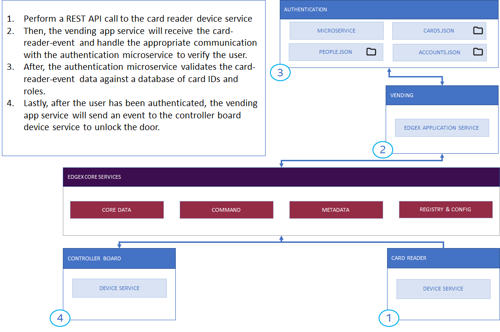
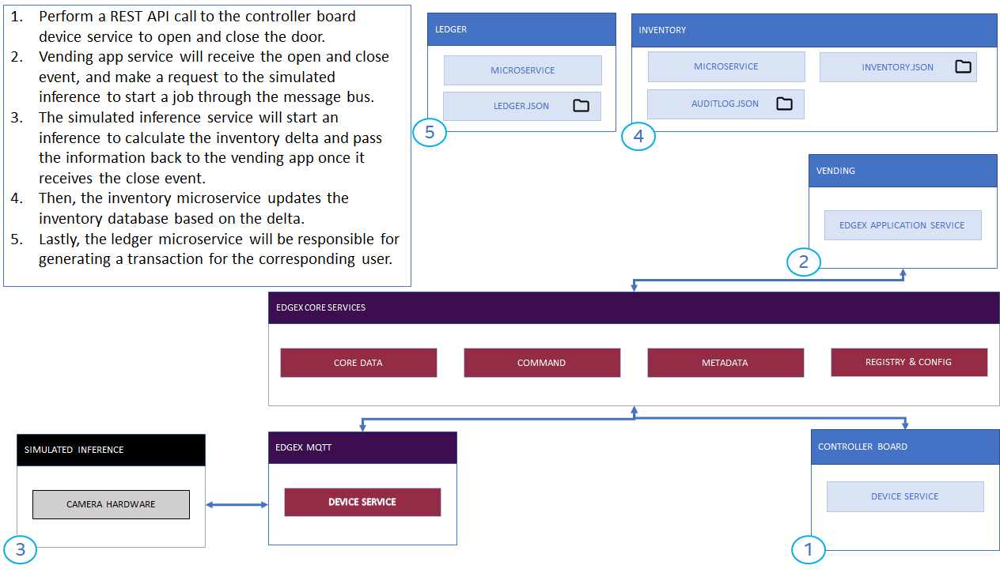
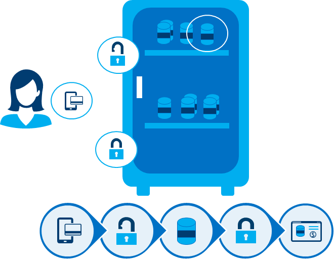
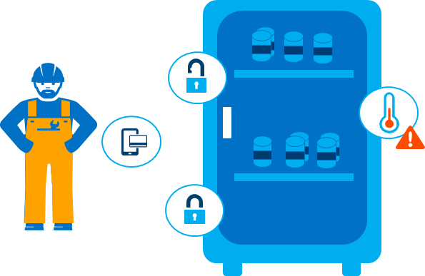

Phase 1 - Simulation Mode
Overview
This document aims to help provide a simple introduction to how we interact with the various microservices in the Automated Checkout reference design, as well as demonstrating how EdgeX command API's are leveraged.
The steps in this guide show how to simulate the automated checkout workflow using curl REST API calls. It is a step-by-step walkthrough with specific commands to run on the command line.
The documentation in phase 2 and phase 3 will discuss more advanced methods of adding physical hardware and customized device services.
Scenarios
This walkthrough completes the following three scenarios:
- Stock the cooler with inventory
- The cooler is empty - it has no stock in its inventory
- A worker swipes their badge
- The worker adds stock to the cooler
- Purchase from the cooler as a customer
- Later, a customer swipes their badge to open the cooler
- The customer takes item(s) from the inventory
- The customer closes the door and gets billed
- The cooler requires maintenance
- The internal temperature of the cooler has exceeded the maximum temperature threshold
- A maintenance worker resolves the issue
Getting started
- Complete steps 1-4 in Getting Started.
- Make sure the containers are all up and running (aside from
edgex-config-seed):docker-compose ps - Make sure the services are not running in maintenance mode:
curl -X GET http://localhost:48099/maintenanceMode
Verify the output and make sure that maintenanceMode value is set to false.
{
"content": "{\"maintenanceMode\":false}",
"contentType": "json",
"statusCode": 200,
"error": false
}
If maintenanceMode is set to true, run the following command to reset maintenance mode back to false:
docker-compose restart as-vending ds-controller-board as-controller-board-status
- In a separate terminal window, watch the logs for a few Automated Checkout services, so that incoming events can be seen:
docker-compose logs -f ds-card-reader ds-controller-board ms-authentication as-vending as-controller-board-status device-mqtt
Info
The output from ds-controller-board and as-controller-board-status may be noisy due to an automated status check occurring every 3 seconds. It may be desirable to try watching logs without those two services.
Additionally, using Portainer to watch Docker compose service logs can be extremely helpful. Start it by running:
make run-portainer
Then, navigate to http://localhost:9000/ in a web browser.
Continue to the next section to start using curl to run through the simulated scenarios.
Walkthrough of scenarios
Each section below contains specific steps and expected output for each of the scenarios mentioned above.
1. Stock the cooler with inventory
In order to fill up the cooler with inventory, someone acting as a "stocker" must swipe their card and proceed to fill the Automated Checkout with products.
However, before we get started, it's important to keep a few things in mind. We will perform a very specific sequence of events:
- Swipe badge
- Open the cooler door
- Close the cooler door
- Verify that the cooler's inventory has been populated
- Verify that the cooler's audit log shows the transaction
That's it! Each of the above actions has a corresponding REST API call that we will run using the curl program on the command line.

For visualization purposes, the CV inference service serves the post-processed images over http. Open http://127.0.0.1:9005 on your web browser to observe how products are being added or removed to the cooler.
Warning
This sequence of events is time-sensitive. Once started, you must continue the sequence.
Once someone has swiped their card, the cooler door unlocks, and the person has roughly 20 seconds (configurable) to open the door before it locks again, if unopened. With this in mind, prepare to run this command, and the following commands soon after.
It's OK to run the commands without critically analyzing them in the moment. You may find it most useful to review them in advance.
If you mess up, you should start fresh. Run the command make down && make clean-docker && make run to scrub the Automated Checkout data and containers, wait approximately one minute after all services have started, and begin again. This scenario does not have any dependencies on the other scenarios in phase 1.
The following diagram represents the flow for swiping your badge and unlocking the door:

To simulate this, perform this REST API call to the ds-card-reader service (time sensitive):
curl -X PUT -H "Content-Type: application/json" -d '{"card-reader-event":"0003293374"}' http://localhost:48098/api/v1/device/name/ds-card-reader/card-reader-event
Note
There should not be any response message when running this EdgeX command successfully.
Info
By default, the card number 0003293374 corresponds to a card in the ms-authentication/cards.json file that has the "stocker" role associated to it.
JSON object for cardId 0003293374.
{
"cardId": "0003293374",
"roleId": 2,
"isValid": true,
"personId": 1,
"createdAt": "1560815799",
"updatedAt": "1560815799"
}
Immediately after, use the as-controller-board-status /status API endpoint to verify that the lock is unlocked (time sensitive):
curl -X GET http://localhost:48094/status
Warning
The lock must have a reading of 0 (unlocked) before proceeding to the next steps. If you attempt to open the door while the lock is engaged the system will assume an error state has occurred and go into maintenance mode.
(Click to Expand) Expected Response
Note that the lock1_status is set to 0, implying that lock1 has been unlocked. It will only stay unlocked for (default) 15 seconds, until the door is opened, at which time an independent timer is started that waits (default) 20 seconds for the stocker (or customer) to close the door after altering inventory.
{
"content":"{ \"lock1_status\":0,
\"lock2_status\":1,
\"door_closed\":true,
\"temperature\":78,
\"humidity\":10,
\"minTemperatureStatus\":false,
\"maxTemperatureStatus\":false
}",
"contentType":"json","statusCode":200,"error":false
}
Then open the door, and close it afterwards, while waiting approximately 3-4 seconds between each event using the following 2 commands.
The following command makes a REST API call to the ds-controller-board service to open the door (no response body expected) (time sensitive):
curl -X PUT -H "Content-Type: application/json" -d '{"setDoorClosed":"0"}' http://localhost:48082/api/v1/device/name/ds-controller-board/command/setDoorClosed
Wait 3.75 seconds:
sleep 3.75
Note
Waiting around 3-4 seconds is necessary because the frequency of "auto-events" that relay readings between some services is set to 3 seconds by default.
This implies that, for example, if you open and close the cooler door within the span of 1-2 seconds, there is a possibility that the auto-event did not pick up the change in the state of the door since its state did not change from one auto-event to the next.
The following command makes a REST API call to the ds-controller-board service to close the door (no response body expected) (time sensitive):
curl -X PUT -H "Content-Type: application/json" -d '{"setDoorClosed":"1"}' http://localhost:48082/api/v1/device/name/ds-controller-board/command/setDoorClosed
Wait about 20-30 seconds for the inventory to be discovered by the CV inference service, and also for background processing of events to occur. The time-sensitive sequence has been completed.
The following diagram represents the flow for opening and closing the door:

After waiting, use the following API calls to check the inventory, audit log, and ledger (not time sensitive):
curl -X GET http://localhost:48095/inventory
(Click to Expand) Inventory API Response Example
The (altered) contents of ms-inventory/inventory.json are contained in the content key below.
{
"content": "{\"data\":[
{\"sku\":\"4900002470\",\"itemPrice\":1.99,\"productName\":\"Sprite (Lemon-Lime) - 16.9 oz\",\"unitsOnHand\":2,\"maxRestockingLevel\":24,\"minRestockingLevel\":0,\"createdAt\":\"1567787309\",\"updatedAt\":\"1567787309\",\"isActive\":true},
{\"sku\":\"4900002500\",\"itemPrice\":1.99,\"productName\":\"Mountain Dew - 16.9 oz\",\"unitsOnHand\":0,\"maxRestockingLevel\":6,\"minRestockingLevel\":0,\"createdAt\":\"1567787309\",\"updatedAt\":\"1567787309\",\"isActive\":true},
{\"sku\":\"4900002510\",\"itemPrice\":1.99,\"productName\":\"Gatorade - 16.9 oz\",\"unitsOnHand\":2,\"maxRestockingLevel\":24,\"minRestockingLevel\":0,\"createdAt\":\"1567787309\",\"updatedAt\":\"1567787309\",\"isActive\":true},
{\"sku\":\"4900002525\",\"itemPrice\":1.99,\"productName\":\"Pringles\",\"unitsOnHand\":2,\"maxRestockingLevel\":32,\"minRestockingLevel\":0,\"createdAt\":\"1567787309\",\"updatedAt\":\"1567787309\",\"isActive\":true},
{\"sku\":\"4900002520\",\"itemPrice\":1.99,\"productName\":\"Ruffles\",\"unitsOnHand\":1,\"maxRestockingLevel\":12,\"minRestockingLevel\":0,\"createdAt\":\"1567787309\",\"updatedAt\":\"1567787309\",\"isActive\":true}
]}",
"contentType": "json",
"statusCode": 200,
"error": false
}
curl -X GET http://localhost:48095/auditlog
(Click to Expand) Audit Log API Response Example
The (altered) contents of ms-inventory/auditlog.json are contained in the content key below.
{
"content": "{\"data\":[{\"cardId\":\"0003293374\",\"accountId\":1,\"roleId\":2,\"personId\":1,\"inventoryDelta\":[{\"SKU\":\"4900002520\",\"delta\":1},{\"SKU\":\"4900002525\",\"delta\":2},{\"SKU\":\"4900002470\",\"delta\":2},{\"SKU\":\"4900002510\",\"delta\":2}],\"createdAt\":\"1585088126815981442\",\"auditEntryId\":\"4c1bca23-b097-4750-8a3b-43cc09733425\"}]}",
"contentType": "json",
"statusCode": 200,
"error": false
}
curl -X GET http://localhost:48093/ledger
(Click to Expand) Ledger API Response Example
Since this a stocking event and not a customer transaction, there is no ledger entry for this transaction. Later in this walkthrough, similar steps will be followed that will yield a financial transaction and hence, a ledger entry.
By default, the ledger service has six registered accounts (accounts 1-6) for consumers. The valid accounts match the account ID's that have authorized access to the cooler through the ms-authentication service (see the ms-authentication/accounts.json file).
The (unaltered) contents of ms-ledger/ledger.json are contained in the content key below.
{
"content": "{\"data\":[
{\"accountID\":1,\"ledgers\":[]},
{\"accountID\":2,\"ledgers\":[]},
{\"accountID\":3,\"ledgers\":[]},
{\"accountID\":4,\"ledgers\":[]},
{\"accountID\":5,\"ledgers\":[]},
{\"accountID\":6,\"ledgers\":[]}
]
}",
"contentType": "json",
"statusCode": 200,
"error": false
}
That's it! The cooler has been populated with inventory, and the audit log and inventory both show evidence of this.
2. Purchase from the cooler as a customer
Now that the cooler's inventory has been stocked, we can simulate a customer swiping their card and removing one or more items from the cooler for purchase. The same time-sensitive disclaimers from the stocking simulation (which was done earlier in this walkthrough) apply here as well, so please review the Stock the Cooler with Inventory section if you have not done so yet.
Warning
If you have not already populated the inventory as described in the Stock the Cooler with Inventory section, do not proceed. The inferencing service follows a specific sequence for changes in inventory. The first transaction in the sequence is always a gain of inventory, corresponding to the stocker adding items to inventory. The following transactions are removal of inventory, corresponding to customers taking items from inventory.
If you mess up, you should start fresh. Run the command make down && make clean-docker && make run to scrub the Automated Checkout data and containers, wait approximately one minute after all services have started, and begin again. This scenario relies on the stocking scenario in phase 1 - if the stocking scenario is skipped, it is still OK, but the randomized sequence of transactions will yield inventory/audit log/ledger changes that differ from the expected examples shown throughout this scenario.
In a manner similar to the previous section (where we stocked our inventory), the following steps are taken when simulating a customer:
- Swipe badge
- Open the cooler door
- Close the cooler door
- Verify that the cooler's inventory has been altered
- Verify that the cooler's audit log shows the transaction
- Verify that the cooler's ledger shows the transaction
That's it! Each of the above actions has a corresponding REST API call that we will run using the curl program on the command line.

To begin, start by performing the following REST command to simulate a customer swiping their badge to open the cooler (time sensitive):
curl -X PUT -H "Content-Type: application/json" -d '{"card-reader-event":"0003278380"}' http://localhost:48098/api/v1/device/name/ds-card-reader/card-reader-event
Note
There should not be any response message when running this EdgeX command successfully.
Immediately after, just as before, use the as-controller-board-status /status API endpoint to verify that the lock is unlocked (time sensitive):
curl -X GET http://localhost:48094/status
(Click to Expand) Expected Response
Note that the lock1_status is set to 0, implying that lock1 has been unlocked. It will only stay unlocked for (default) 15 seconds, until the door is opened, at which time an independent timer is started that waits (default) 20 seconds for the customer (or stocker) to close the door after altering inventory.
{
"content":"{ \"lock1_status\":0,
\"lock2_status\":1,
\"door_closed\":true,
\"temperature\":78,
\"humidity\":10,
\"minTemperatureStatus\":false,
\"maxTemperatureStatus\":false
}",
"contentType":"json","statusCode":200,"error":false
}
Then open the door, and close it afterwards, while waiting approximately 3-4 seconds between each event using the following 2 commands.
The following command makes a REST API call to the ds-controller-board service to open the door (no response body expected) (time sensitive):
curl -X PUT -H "Content-Type: application/json" -d '{"setDoorClosed":"0"}' http://localhost:48082/api/v1/device/name/ds-controller-board/command/setDoorClosed
Wait 3.75 seconds:
sleep 3.75
The following command makes a REST API call to the ds-controller-board service to close the door (no response body expected) (time sensitive):
curl -X PUT -H "Content-Type: application/json" -d '{"setDoorClosed":"1"}' http://localhost:48082/api/v1/device/name/ds-controller-board/command/setDoorClosed
At this point we are done simulating customer interactions with the Automated Checkout. The next steps are to get the inventory, ledger, and audit logs, and verify that they all show consistent information (not time sensitive, but may need to wait 20-30 seconds for background processing):
curl -X GET http://localhost:48095/inventory
(Click to Expand) Inventory API Response Example
A few items have been removed from the inventory in the below API response. Carefully examine the unitsOnHand and note that some items are no longer fully stocked by also examining the maxRestockingLevel. It may be extra insightful to compare this to the stocker section's inventory API response example, and also even more insightful to take a look at the below audit log and ledger responses for a proper view of the inventory delta that took place.
The (altered) contents of ms-inventory/inventory.json are contained in the content key below.
{
"content": "{\"data\"{\"data\":[
{\"sku\":\"4900002470\",\"itemPrice\":1.99,\"productName\":\"Sprite (Lemon-Lime) - 16.9 oz\",\"unitsOnHand\":2,\"maxRestockingLevel\":24,\"minRestockingLevel\":0,\"createdAt\":\"1567787309\",\"updatedAt\":\"1567787309\",\"isActive\":true},
{\"sku\":\"4900002500\",\"itemPrice\":1.99,\"productName\":\"Mountain Dew - 16.9 oz\",\"unitsOnHand\":0,\"maxRestockingLevel\":6,\"minRestockingLevel\":0,\"createdAt\":\"1567787309\",\"updatedAt\":\"1567787309\",\"isActive\":true},
{\"sku\":\"4900002510\",\"itemPrice\":1.99,\"productName\":\"Gatorade - 16.9 oz\",\"unitsOnHand\":1,\"maxRestockingLevel\":24,\"minRestockingLevel\":0,\"createdAt\":\"1567787309\",\"updatedAt\":\"1567787309\",\"isActive\":true},
{\"sku\":\"4900002525\",\"itemPrice\":1.99,\"productName\":\"Pringles\",\"unitsOnHand\":1,\"maxRestockingLevel\":32,\"minRestockingLevel\":0,\"createdAt\":\"1567787309\",\"updatedAt\":\"1567787309\",\"isActive\":true},
{\"sku\":\"4900002520\",\"itemPrice\":1.99,\"productName\":\"Ruffles\",\"unitsOnHand\":1,\"maxRestockingLevel\":12,\"minRestockingLevel\":0,\"createdAt\":\"1567787309\",\"updatedAt\":\"1567787309\",\"isActive\":true}
]}",
"contentType": "json",
"statusCode": 200,
"error": false
}
In this particular example, the customer purchased 1 item of Water (Dejablue) (sku 7800009257) and 3 items of Mountain Dew (sku 1200050408)
You can compare the unitsOnHand of each sku from the previous inventory data in step 1.
curl -X GET http://localhost:48095/auditlog
(Click to Expand) Audit Log API Response Example
The audit log has a new transaction that corresponds to this customer interaction. It also contains the original stocker interaction.
The (altered) contents of ms-inventory/auditlog.json are contained in the content key below.
{
"content": "{\"data\":[
{\"cardId\":\"\",\"accountId\":0,\"roleId\":0,\"personId\":0,\"inventoryDelta\":[{\"SKU\":\"4900002520\",\"delta\":1},{\"SKU\":\"4900002525\",\"delta\":2},{\"SKU\":\"4900002470\",\"delta\":2},{\"SKU\":\"4900002510\",\"delta\":2}],\"createdAt\":\"1591664096434624545\",\"auditEntryId\":\"b0c119ef-e933-44d2-8c14-8a720cc95417\"},
{\"cardId\":\"0003278380\",\"accountId\":1,\"roleId\":1,\"personId\":1,\"inventoryDelta\":[{\"SKU\":\"4900002525\",\"delta\":-1},{\"SKU\":\"4900002510\",\"delta\":-1}],\"createdAt\":\"1591664285876117173\",\"auditEntryId\":\"6447cc8f-c2ba-46d9-96cb-0e7c5ab72e8b\"}]}}",
"contentType": "json",
"statusCode": 200,
"error": false
}
curl -X GET http://localhost:48093/ledger
(Click to Expand) Ledger API Response Example
Note that this API response now includes a financial transaction indicating what was actually removed from the cooler and associated with the customer's transaction. Other accounts in the ledger are still empty since there have been no transactions.
The (altered) contents of ms-ledger/ledger.json are contained in the content key below.
{
"content": "{\"data\":[
{\"accountID\":1,\"ledgers\":[{\"transactionID\":\"1591664279852530807\",\"txTimeStamp\":\"1591664279852530890\",\"lineTotal\":3.98,\"createdAt\":\"1591664279852530964\",\"updatedAt\":\"1591664279852531037\",\"isPaid\":false,\"lineItems\":[{\"sku\":\"4900002525\",\"productName\":\"Pringles\",\"itemPrice\":1.99,\"itemCount\":1},{\"sku\":\"4900002510\",\"productName\":\"Gatorade - 16.9 oz\",\"itemPrice\":1.99,\"itemCount\":1}]}]},
{\"accountID\":2,\"ledgers\":[]},
{\"accountID\":3,\"ledgers\":[]},
{\"accountID\":4,\"ledgers\":[]},
{\"accountID\":5,\"ledgers\":[]},
{\"accountID\":6,\"ledgers\":[]}
]}",
"contentType": "json",
"statusCode": 200,
"error": false
}
From the ledger data, notice the transaction done by accountID 1.
"{\"accountID\":1,
\"ledgers\":[{\"transactionID\":\"1585679067654735828\",
\"txTimeStamp\":\"1585679067654735975\",
\"lineTotal\":7.96,
\"createdAt\":\"1585679067654736044\",
\"updatedAt\":\"1585679067654736110\",
\"isPaid\":false,
\"lineItems\":[
{\"sku\":\"4900002525\",\"productName\":\"Pringles\",\"itemPrice\":1.99,\"itemCount\":1},
{\"sku\":\"4900002510\",\"productName\":\"Gatorade - 16.9 oz\",\"itemPrice\":1.99,\"itemCount\":1}
]
}]}"
3. The cooler requires maintenance
In this scenario, all Automated Checkout services are operating as usual, except the following conditions are present:
- The cooler has exceeded the maximum allowable temperature threshold of 83 degrees Fahrenheit
- It has stayed at or above this temperature threshold for more than 15 seconds

(Click to Expand) Technical note about temperature
The as-controller-board-status service takes temperature readings regularly and calculates the average temperature over a configurable amount of time. If the average temperature over this duration exceeds the thresholds defined in the as-controller-board-status service's configured value, it will cause the cooler to enter maintenance mode and it will attempt to send a notification. The frequency of notifications can be configured as well.
If the temperature temporarily exceeds the maximum or minimum allowable temperature thresholds, but does not push the time-averaged temperature above or below the thresholds, no notification will be sent.
When the Automated Checkout is in an unstable state such as the one presented above, it enters maintenance mode. When the Automated Checkout is in this state, it automatically denies access to everyone except individuals that possess badges that are associated with the maintenance worker role.
Note
Maintenance mode is triggered in a few conditions:
- Minimum or maximum temperature thresholds exceeded over a time-averaged temperature
- The cooler door is left open for too long
- The inferencing service is not responsive upon badge swipe
- The inferencing service is not responsive upon an inferencing request
This scenario walks through the following steps:
- Set the temperature to a value above the default maximum temperature threshold
- Continue to set the temperature until the time-averaged temperature is above the default maximum temperature threshold
- Simulate a maintenance worker swiping their badge to maintain the cooler
- Reset the temperature back to normal
- Verify that maintenance mode is no longer active
Warning
This sequence of events is time-sensitive. Once started, you must continue the sequence.
This sequence differs from the other scenarios leading up to this point. It does not require the cooler door to be opened.
It's OK to run the commands without critically analyzing them in the moment. You may find it most useful to review them in advance.
If you mess up, you should start fresh. Run the command make down && make clean-docker && make run to scrub the Automated Checkout data and containers, wait approximately one minute after all services have started, and begin again. This scenario does not have any dependencies on the other scenarios in phase 1.
To begin the scenario, first start by setting the temperature of the cooler to 99.00 degrees Fahrenheit. The following command will make a REST API call to the ds-controller-board service (time sensitive):
curl -X PUT -H "Content-Type: application/json" -d '{"setTemperature":"99.00"}' http://localhost:48082/api/v1/device/name/ds-controller-board/command/setTemperature
Note
There should not be any response message when running this EdgeX command successfully.
Repeat this command once or twice, over a span of 15 seconds to establish an average.
During this waiting period, periodically check the status of maintenance mode. The following command will make a REST API call to the as-vending service (no longer time sensitive):
curl -X GET http://localhost:48099/maintenanceMode
(Click to Expand) Expected Output
The value of maintenanceMode will switch to true from false once the time-averaged temperature exceeds the maximum temperature threshold (default 83 degrees Fahrenheit):
{
"content": "{\"maintenanceMode\":true}",
"contentType": "json",
"statusCode": 200,
"error": false
}
The following diagram represents the flow for setting the temperature and setting maintenance mode to true:

The next step involves a maintenance worker swiping their badge to resolve the issue. When a maintenance worker swipes their badge, maintenance mode is reset.
For the sake of simplicity in this walkthrough, we will first fix the temperature of the cooler and then the maintenance worker will swipe their badge to fix maintenance mode. The reason the maintenance worker would have to swipe their badge twice is because maintenance mode will be set to false immediately, but it will be immediately set back to true once the next temperature reading arrives. So, to avoid swiping the badge twice, the temperature will be reset before swiping.
First, set the temperature to a normal value (45 degrees) a few times over the span of 15 seconds (minimum) (time sensitive):
curl -X PUT -H "Content-Type: application/json" -d '{"setTemperature":"45.00"}' http://localhost:48082/api/v1/device/name/ds-controller-board/command/setTemperature
Note
There should not be any response message when running this EdgeX command successfully.
Now that a new, proper average temperature value has been set, the maintenance worker can proceed to swipe their card, fix the cooler, and set the maintenance mode back to false.
To do this, follow a familiar step, only this time use a card that has been assigned to a maintenance worker role (not time sensitive):
curl -X PUT -H "Content-Type: application/json" -d '{"card-reader-event":"0003278385"}' http://localhost:48098/api/v1/device/name/ds-card-reader/card-reader-event
Note
There should not be any response message when running this EdgeX command successfully.
Info
The card 0003278385 is assigned to the maintenance worker role, and a person with ID 1. Additionally, if the maintenance worker opens and closes the door, there will be a corresponding audit log entry for that door open/close event.
Now, check that maintenance mode has been reset using a familiar command (not time sensitive):
curl -X GET http://localhost:48099/maintenanceMode
(Click to Expand) Expected Output
The value of maintenanceMode will switch to true from false once the time-averaged temperature exceeds the maximum temperature threshold (default 83 degrees Fahrenheit):
{
"content": "{\"maintenanceMode\":false}",
"contentType": "json",
"statusCode": 200,
"error": false
}
This is the end of the scenario, and should provide an essential understanding of maintenance mode as well as temperature reactions in the Automated Checkout reference design.
Summary
You have successfully run through a typical Automated Checkout workflow using simulated interactions and devices. In the other phases of this reference design, we ramp up to using physical devices and provide guidance on writing new services for your custom devices and needs.